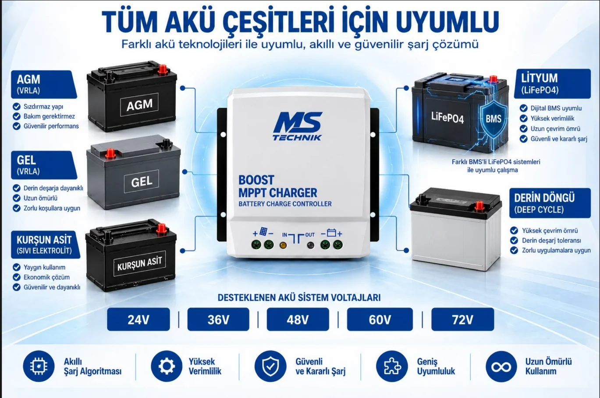
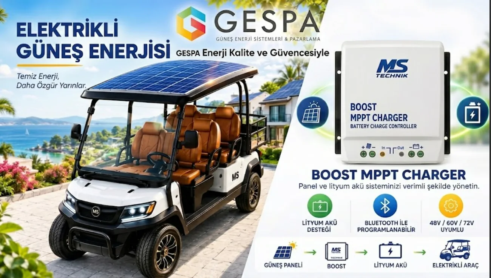

{kind=link}
{kind=link}
{kind=link}
Tüm akü tipleriyle uyumlu
AGM, jel, sulu kurşun-asit ve lityum akülerle çalışır. Kullanıcı profiliyle şarj parametreleri akü üreticisinin önerdiği değerlere ayarlanır.
Golf araçlarına, otel ve site hizmet araçlarına, elektrikli yük ve platform araçlarına güneş paneli dönüşümü. Panelden gelen enerji, MS Teknik BOOST MPPT 24-72 V üzerinden akü paketinize aktarılır — araç park hâlindeyken bile şarj olur, prize bağlı geçen süre kısalır.
Sistemin kalbindeki şarj kontrol cihazı — doğrudan buradan sipariş edebilirsiniz. Teknik künye hemen aşağıda.

Güneş panelinden aracınızın akü grubuna doğrudan şarj — 24 V'tan 72 V'a kadar, AGM'den lityuma tüm akü tipleriyle. Cihazı tek başına da satın alabilirsiniz; panel ve akü ürüne dahil değildir, aracınıza uygun panel gücünü ücretsiz keşifte birlikte belirliyoruz.
₺7.300 ≈ $154
KDV dahil fiyattır.
💰 Havale/EFT ile: ₺6.550
AGM, jel, sulu kurşun-asit ve lityum akülerle çalışır. Kullanıcı profiliyle şarj parametreleri akü üreticisinin önerdiği değerlere ayarlanır.
Şarj parametreleri telefondan ayarlanır, sistemin durumu aynı yerden izlenir.
24, 36, 48, 60 ve 72 V akü sistemleriyle çalışır; aracınızın etiket değerine göre yapılandırılır.
Değerler üreticinin teknik bülteninden alınmıştır. Aracınıza uygun panel gücünü ve kablolamayı ücretsiz keşifte birlikte belirliyoruz.
| Ürün | BOOST MPPT 24-72 V — Battery Charge Controller |
| Marka | MS Teknik · Türkiye'de üretilmiştir |
| Şarj tipi | MPPT — yükseltici (boost) dönüştürücü |
| Desteklenen akü sistemleri | 24 / 36 / 48 / 60 / 72 V |
| Akü uyumluluğu | AGM (VRLA), jel (VRLA), sulu kurşun-asit ve lityum; kullanıcı profili |
| Solar panel giriş gerilimi | 15–60 V DC |
| Sürekli çıkış akımı | 15 A (kısa devre çıkış akımı 20 A) |
| Çıkış voltaj toleransı | ±0,2 V · çıkış gürültüsü 10 mV RMS |
| Yüksüz giriş akımı | < 80 mA |
| Programlama / izleme | Bluetooth (harici ekran yoktur) |
| Korumalar | Panel ve akü ters bağlantı, akü yüksek/düşük voltaj, gece ters akım |
| Bağlantılar | Vidalı terminaller — maksimum kablo kesiti 10 mm² |
| Soğutma | Pasif — alüminyum kanatlı gövde |
| Çalışma sıcaklığı | −20 °C ile +55 °C · bağıl nem maks. %95 (yoğuşmasız) |
| Koruma sınıfı | IP22 |
| Boyutlar | 16 × 15,5 × 6,5 cm (G × U × D) |
| Garanti | 2 yıl |
| Nominal sistem | Sürekli çıkış gücü | Verimlilik |
|---|---|---|
| 36 V | 540 W | %95 |
| 48 V | 720 W | %95,5 |
| 60 V | 900 W | %95,5 |
| 72 V | 1080 W | %98 |
24 V akü sistemi de desteklenir; üretici bülteninde 24 V için sürekli çıkış gücü ayrıca belirtilmemiştir.


Elektrikli araçlar sessiz ve temiz; ama menzil bittiğinde hâlâ bir prize bağlanmak gerekiyor. Araç üstüne yerleştirilen güneş paneli ve BOOST MPPT Charger ikilisi bu bağımlılığı azaltır: araç dışarıda durduğu her saat üretim yapar, akü paketi gün boyu beslenir.
Zincir basittir: güneş üretir, kontrol cihazı yönetir, akü depolar, araç kullanır.
Aracın tavanına ya da üst platformuna yerleştirilen panel, gün boyu doğru akım üretir.
Panel gerilimini akü paketinin seviyesine yükseltir; MPPT algoritmasıyla o anki ışıkta çekilebilecek en yüksek gücü çeker.
Şarj akımı, akü paketine kontrollü biçimde aktarılır. Ayarlar paketin değerlerine göre programlanır.
Araç aynı akü paketinden beslenmeye devam eder; şebekeden şarj ihtiyacı azalır.
Panel seçiminden kablo kesitine, kontrol cihazının konumundan akü bağlantısına kadar kurulumun tamamı ekibimizce yapılır. Araç üzerindeki mevcut elektrik tesisatına müdahale edilmeden önce sistem şeması çıkarılır.
Gün içinde açık alanda duran elektrikli araçlar bu dönüşümden en çok faydayı görür; akü tipi AGM, jel, kurşun-asit veya lityum olabilir.
Otel, tatil köyü ve golf sahalarında gün boyu açık alanda kalan araçlar — panel için ideal koşul.
Bagaj, temizlik ve bakım ekiplerinin kullandığı elektrikli araçlarda vardiya arası şarj beklemesini azaltır.
Sera, fidanlık ve büyük bahçelerde şebekeden uzakta çalışan elektrikli araçlar için pratik çözüm.
Katkı, panel gücüne ve günlük güneşlenmeye bağlıdır. Araç tavanına sığan bir panel, akü paketini tek başına sıfırdan doldurmaktan çok gün boyu destek verir: şebekeden çekilen şarjı azaltır ve araç park hâlindeyken aküyü dolu tutar. Aracınızın akü kapasitesine göre gerçekçi katkıyı keşifte birlikte hesaplıyoruz.
Evet. Cihaz AGM (VRLA), jel (VRLA), sulu kurşun-asit ve lityum akülerle uyumludur; kullanıcı profili sayesinde şarj parametreleri akü üreticisinin önerdiği değerlere ayarlanabilir. Doğru profili kurulumda biz yapılandırıyoruz, bu yüzden akü tipini keşifte netleştiriyoruz.
Cihaz 24, 36, 48, 60 ve 72 V akü sistemleriyle uyumludur; panel giriş gerilimi 15–60 V DC aralığındadır. Bu aralığın dışındaki sistemlerde farklı bir çözüm gerekir — aracınızın etiket değerlerini paylaşırsanız uygun donanımı birlikte belirleriz.
Şarj parametreleri telefondan programlanabilir ve sistemin durumu izlenebilir. Kurulumda ayarları aracınızın akü paketine göre biz yapıyoruz; sonrasında dilerseniz üretimi ve şarj durumunu kendiniz takip edebilirsiniz.
Panel ışık aldığı sürece üretim yapar; sistem hem park hâlinde hem hareket hâlinde çalışır. En verimli üretim, aracın gölgesiz ve açık alanda kaldığı saatlerde gerçekleşir.
Araç üreticisinin garanti koşulları markadan markaya değişir. Kurulum öncesinde aracınızın garanti durumunu birlikte değerlendiriyoruz; sizinle netleştirmeden işlem yapmıyoruz.
Aracınızın akü gerilimi ve tavan alanı üzerinden ücretsiz değerlendirme yapalım.